싱글
1개타일 한 개

숫자로 먼저 비교하고, 숫자가 같으면 문양으로 비교해요. 그림의 같은 13끼리는 해가 가장 강하고 구름이 가장 약해요.
LEXIO · CHOOSE YOUR NEXT MOVE
포커 족보로 타일을 털고,
다음 선을 잡아 보세요.
앞사람과 같은 개수로, 더 강한 조합을 내요. 누구보다 먼저 타일을 모두 내려놓으면 이번 판의 1등이에요.
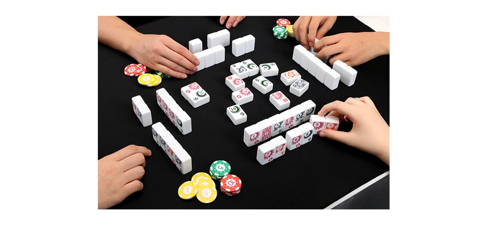
1·2·3·5개만 낼 수 있어요. 한 명이 손을 다 털면 즉시 정산하고, 5판 뒤 점수칩이 가장 많은 사람이 승리해요.
타일은 해·달·별·구름 네 문양이고, 각 문양에 1~15가 하나씩 있어요. 총 60개 중 아래 범위만 사용해요.
| 인원 | 각 문양에서 쓸 숫자 | 전체 타일 | 한 사람당 |
|---|---|---|---|
| 3인 | 1~9 | 36개 | 12개 |
| 4인 | 1~13 | 52개 | 13개 |
| 5인 | 1~15 | 60개 | 12개 |
2 > 1 > 15 > 14 > … > 4 > 3. 사용 범위가 줄어도 2가 가장 강하고 3이 가장 약하다는 점은 같아요.
같은 숫자라면 해 > 달 > 별 > 구름 순서예요. 따라서 전체 싱글 중에서는 해 2가 최강, 구름 3이 최약이에요.
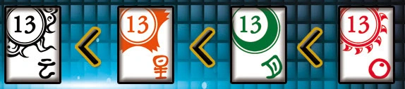
구름 1은 해 15보다 강해요. 싱글은 문양을 보기 전에 숫자부터 비교하기 때문이에요.
지수 7 페어를 내요.
민호 9 페어로 받아쳐요.
다른 사람들 모두 연속으로 패스해요.
민호 새 선이 되어 3 싱글을 낼 수 있어요.
포카드도 한 번에 네 개만 낼 수는 없어요. 다른 타일 한 개를 보태 다섯 개짜리 메이드로 내야 해요. 투 페어 네 개도 한꺼번에 내는 조합이 아니에요.
공식 화이트 레퍼런스 카드의 타일 그림이에요. 메이드 다섯 종류는 아래 순서로 강해져요. 더 강한 종류라면 숫자가 낮아도 받아칠 수 있어요.
스트레이트＜플러시＜풀하우스＜포카드＜스트레이트플러시
족보 8종
타일 한 개
숫자로 먼저 비교하고, 숫자가 같으면 문양으로 비교해요. 그림의 같은 13끼리는 해가 가장 강하고 구름이 가장 약해요.
같은 숫자 두 개
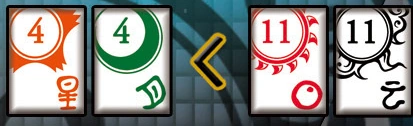
더 높은 숫자의 페어가 이겨요. 같은 숫자의 페어 두 쌍을 비교한다면 해 타일이 들어간 쪽이 더 강해요.
같은 숫자 세 개
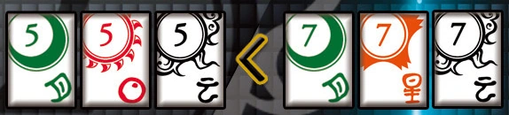
세 타일의 공통 숫자로 비교해요. 그림에서 7 트리플은 5 트리플을 이겨요. 문양이 섞여 있어도 돼요.
문양에 상관없이 연속된 숫자 다섯 개
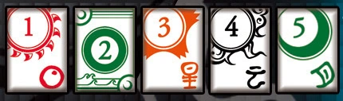
연속 숫자의 서열을 비교해요. 같은 다섯 숫자로 만든 조합끼리는 가장 센 숫자 타일의 문양을 봐요. 1·2가 들어가는 특수한 순서는 아래에서 따로 확인하세요.
같은 문양 다섯 개
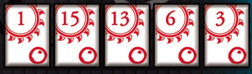
문양보다 숫자를 먼저 봐요. 가장 센 숫자가 같으면 다음 숫자끼리 차례로 비교해요. 다섯 숫자가 모두 같을 때만 문양으로 정해요. 해 플러시가 항상 이기는 것은 아니에요.
같은 숫자 세 개 + 다른 같은 숫자 두 개
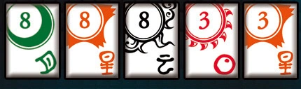
트리플 쪽 숫자가 더 센 조합이 이겨요. 페어 쪽 숫자는 비교하지 않아요. 6·6·6 + 3·3은 5·5·5 + 2·2보다 강해요.
같은 숫자 네 개 + 다른 타일 한 개
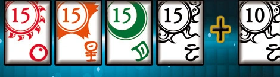
네 개가 같은 쪽의 숫자로 비교해요. 덧붙인 타일은 승패에 영향을 주지 않아요. 네 개만 내면 안 되고, 반드시 한 개를 더해 다섯 개로 내요.
같은 문양이면서 연속된 숫자 다섯 개
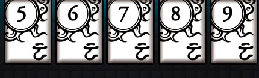
가장 강한 메이드예요. 스트레이트와 같은 숫자 서열을 따르고, 같은 숫자 조합이면 문양으로 비교해요. 줄여서 스티플이라고도 해요.
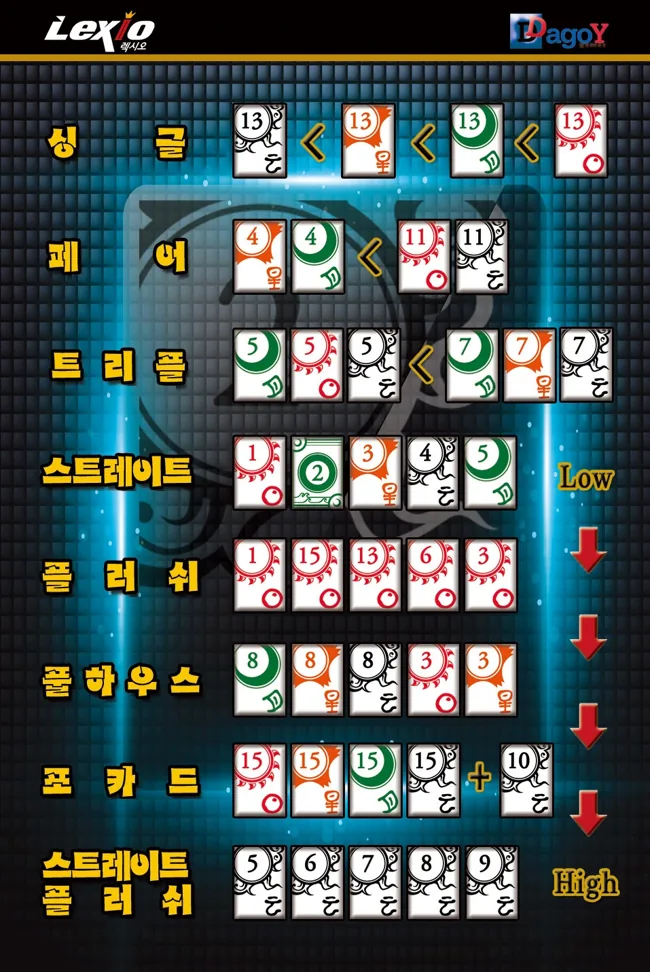
각 조합 그림은 이 공식 화이트 레퍼런스 카드에서 가져왔어요.
앞사람이 플러시를 냈다면 더 센 플러시나 풀하우스·포카드·스트레이트플러시를 낼 수 있어요. 스트레이트는 더 약해서 안 되고, 싱글·페어·트리플은 개수가 달라서 안 돼요.
1·2·3·4·5처럼 작은 숫자부터 시작할 수도 있고, 그 판에서 쓰는 가장 큰 숫자 뒤에 1을 붙일 수도 있어요. 뒤에 붙일 때의 1은 3인에서 10, 4인에서 14, 5인에서 16처럼 쓰여요.
| 인원 | 가능한 조합 | 불가능한 조합 |
|---|---|---|
| 3인 | 6·7·8·9·1 | 7·8·9·1·2 |
| 4인 | 10·11·12·13·1 | 11·12·13·1·2 |
| 5인 | 12·13·14·15·1 | 13·14·15·1·2 |
큰 숫자 → 1까지는 이어도, 그 뒤에 2를 또 붙일 수는 없어요. 1·2·3·4·5가 가능하다는 것과 구분해요.
그다음은 2·3·4·5·6, 그다음은 위 표에서 1로 끝나는 조합이에요. 나머지 연속 숫자는 끝 숫자가 클수록 강해요. 이 순서는 스트레이트플러시에도 똑같이 적용돼요.
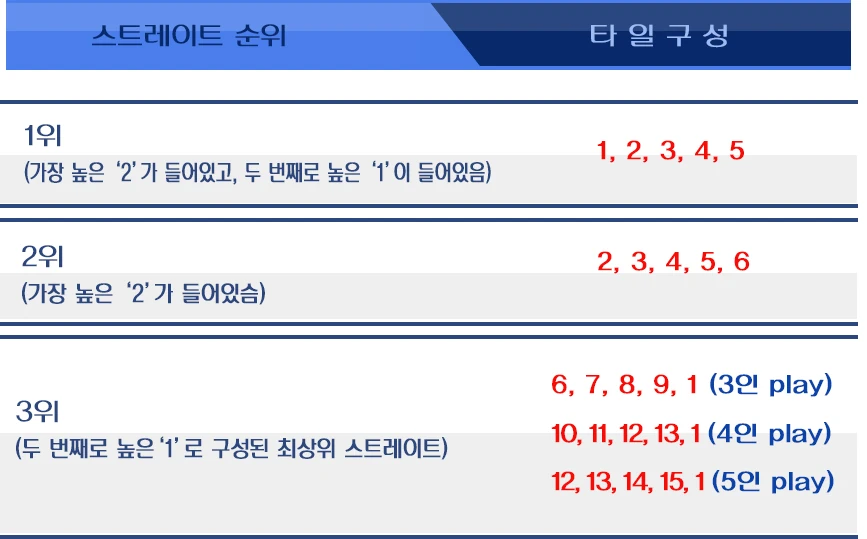
타일 5개가 남았고 그중 숫자 2가 두 개라면 5 × 4 = 20개로 간주해요. 3개로 계산된 사람에게는 20 − 3 = 17점을 줘요. 두 사람의 차이를 구한 다음 배수로 곱하는 방식과는 달라요.
| 참가자 | A | B | C | D | E |
|---|---|---|---|---|---|
| 남은 타일 | 0개 | 1개 | 3개 | 7개 | 8개 |
| 최종 득실 | +19점 | +14점 | +4점 | −16점 | −21점 |
B도 A에게 1점을 주지만 C·D·E에게 합계 15점을 받아서 최종적으로 14점을 얻어요. 1등 외의 사람도 이번 판에서 이익을 볼 수 있어요.
공식 영문 홈페이지는 적게 남긴 사람부터 정산하며, 칩이 바닥난 사람은 즉시 탈락해 더 받거나 내지 못한다고 안내해요. 나중에 받을 돈과 미리 상계하지 않아요. 정산기는 모두 지불할 칩이 충분한 상황을 계산하므로, 칩이 바닥난 실제 상황은 이 정산 순서를 따라요.
각자의 남은 타일 전체 개수와 그중 숫자 2의 개수를 넣으세요. 타일을 다 턴 한 명은 0개로 입력해요.
칩이 충분한 상황의 판당 득실을 계산해요. 초기 칩과 이전 판 점수를 더한 총점은 아니에요.
구름 3을 가진 사람이 선을 맡을 뿐이에요. 첫 조합에는 다른 타일을 써도 돼요.
렉시오의 조합은 1·2·3·5개뿐이에요. 같은 숫자 네 개를 쓴다면 아무 다른 타일 한 개를 붙여 포카드 메이드로 내세요.
가능해요. 높은 조합을 나중에 선을 잡는 데 쓰려고 아껴두는 것도 전략이에요. 다른 사람들이 모두 연속해서 패스하면 마지막으로 낸 사람이 새 선을 잡아요.
가장 센 숫자부터 차례로 비교해요. 다섯 숫자가 모두 똑같을 때 문양으로 가려요.
이 안내의 기준인 공식 한국어 오리지널 설명서는 두 개면 4배, 세 개면 8배로 계산해요. 타일 전체 개수에 배수를 적용한 뒤 차이를 정산해요.
공식 안내에 따르면 색상만 다르고 구성과 게임 방법은 같아요. 이 페이지는 특수카드를 더하지 않은 오리지널 기본 규칙을 기준으로 해요.
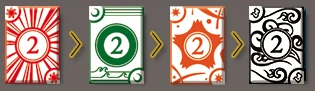
해 2로 선을 확실히 잡을 수 있어도, 끝까지 아끼다가 남기면 정산에서 손해가 커져요.
방 코드를 공유해 3~5명이 함께하거나 빈자리에 컴퓨터를 추가할 수 있어요. 타일을 고르면 족보와 낼 수 있는 이유를 보여주고, 라운드가 끝나면 자동 정산표와 모두의 남은 손패를 공개해요. 방장이 턴 제한시간을 정하며 컴퓨터 연습은 시간 제한이 없어요.
공식 칩 소진 탈락을 적용해요. 온라인판에서는 탈락으로 남은 인원이 3명 미만이 되면 5라운드 전에도 최종 칩 순위로 종료해요.
렉시오 플레이해보기